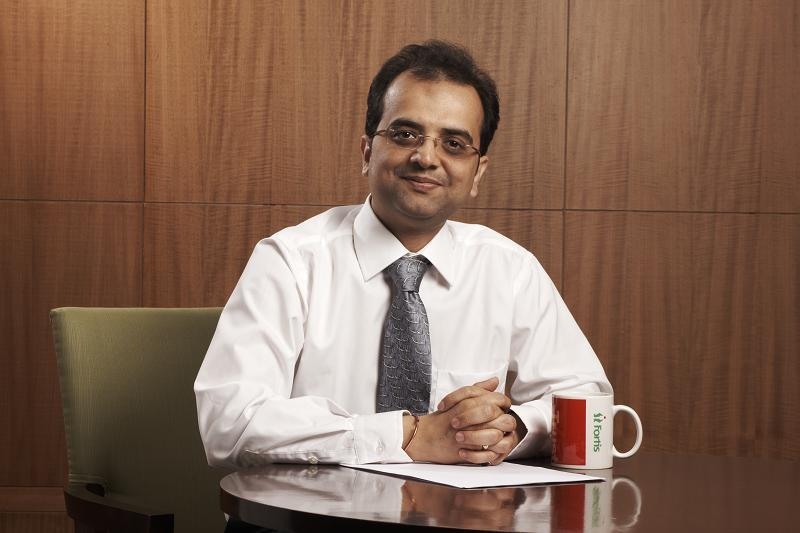

Dr. Samir Parikh,
MBBS, DPM, MD(psy)Consultant Psychiatrist,
Director,
Department of Mental Health and Behavioral Sciences,
Fortis Healthcare
https://twitter.com/dr_samirparikh
For us as parents, there is perhaps no greater thrill than to see our children succeed and flourish in their chosen field. But in a system like ours wherein academic prowess takes precedence above all else, raising a child who wants to become a sportsperson is not possible without our own active support and encouragement.
Sports as a lesson in life-skills
To be a sportsperson is not just about being a good cricketer, badminton player or athlete. Sports teach us more than just rules and athletic skill. Rather, it is the avenue through which children learn the most important life skills. Playgrounds are where children learn how to make friends. It is through sports that children learn the importance of both competition and cooperation. It is here that they learn what it means to be a team player and how to lead a team to victory; how to strike the right balance between an individual and a team identity and how to nurture both. Sports allow children to channelize their aggression and frustration into motivation and to not give up in the face of adversity. And perhaps most importantly, sports teach children how to handle both failure and success and take it in their stride. Allowing the child time and opportunity to play will ensure that they are ready to take on life and whatever challenges come their way, both on and off the field.Striking the Right Balance:
Children into sports are often going to experience a conflict between academics and sports, and there’s no single easy solution to the dilemma. Yes, focusing on academics may be a safer option and can open up several professional options later in life, at the end of the day what matters is what your child wants to achieve out of life. Once a child figures out his strengths and weakness areas, it’s often a better idea to invest in harnessing one’s strengths to reach one’s fullest potential rather than getting bogged down by trying to improve upon one’s weak area. Take a strength oriented approach; nurture your child’s talents. At the same time, don’t despair; remember that a good sportsperson has all the skills to do well academically as well – good attention and concentration, the motivation to work hard, discipline, and the grit to overcome hardships and failures.Do’s and Don’ts for Parents:
• The effort counts, not the result:
What matters is not whether your child wins or loses, but rather, how he played the game. Focus on the effort your child puts in, not necessarily the outcomes. Wins and losses are a part of every game – to expect your child to win each time would be unfair. Encourage the child to compete with himself and to up his own game, rather than focusing all his energies on how his teammates or opponents are playing.• Respect your child’s preferences:
Ensure that the desire to play this sport is coming from your child. Don’t force your own ideas and ambitions on your child. Is he enjoying the sport he’s playing, or would he rather be doing something else?• Love your child unconditionally:
Don’t let the outcome of one game affect your attitude or behaviour towards your child. Your child needs to know that you love him and appreciate him, irrespective of how he performs, be it at sports, academics or any other sphere of life. It’s important for you to let your child know that your affection is contingent on his choice of activity or his performance.• Model positive behaviour:
you may not always realize it, but your child does look up to you and learns his values by observing you. If you want your child to grow up with a positive attitude and the right spirit, you need to behave the same. Model fairness, positive coping strategies, healthy conflict resolution and interpersonal communication and respect.• Inculcate the right attitude:
talk to your child about what it means to be a sportsperson. It’s important that your child knows that ends don’t justify the means. Ensure that your children have a healthy sense of self-confidence and teach them the value of humility and self-assurance.• Stay away from the blame game:
blaming unfair referees, poor equipment or other extraneous factors for your child’s poor performance will only encourage your child to do the same. Instead, stay away from blaming others and help your child foster a sense of accountability and responsibility for his actions. It’s only when you child understands the consequences of his actions that he will be able to work harder and improve upon his own performance.• De-individuate from your child:
it’s a very natural desire for parents to live their own unfulfilled dreams vicariously through their children. This, however, can become a burden for the child, who is likely to have aspirations of his own. Don’t use your child’s talents to seek or define your own identity. Remember that your child is an individual in his own right; appreciate and encourage your child’s uniqueness, allow him to set his own targets and define his own goals. Respect your child for whatever choices he makes. Your role is limited to encouraging and supporting your child, and no more.• Don’t be critical of your child:
open and honest feedback can help your child do better. But be cautious about how you give this feedback. Negative feedback, if at all, must be specific and accurate. Make sure you don’t criticize your child in front of anyone else. At the same time, don’t be stingy with appreciation and accolades for your child.• Help in problem solving, when required:
your child, may at times, get carried away and set unrealistic targets for themselves. Make sure your child knows that you’re available if and when they need your help. When required, help your child gain an objective perspective and guide them in their endeavours.• Don’t take away the fun:
children play sports because it’s what they enjoy doing. Don’t nag your child or turn practice sessions into a chore. Doing so will only reduce your child’s interest, motivation and performance in the game. What matters most is not the child’s skill at the game, but how much fun he has while playing.• Let your child be a child:
No matter how far your child may excel at his sport, at the end of the day, he is just a child. Have a relationship with your child outside the sports ground as well; make sure your child has a normal and happy childhood that he can cherish all his life.
© Dr Samir Parikh All Rights Reserved
Unauthorized Use, Copy, Editing, Reproduction, Publication, Duplication And Distribution Of Any Of any of the content on this page , Or Any Portion Of Them Is Not Allowed,
Any vilolation of the copyright laws Will Be Dealt Within The Boundaries Of The Indian Jurisdiction .